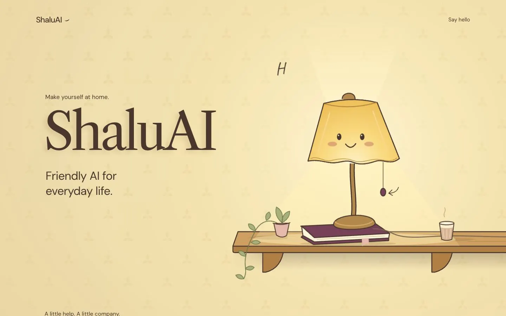
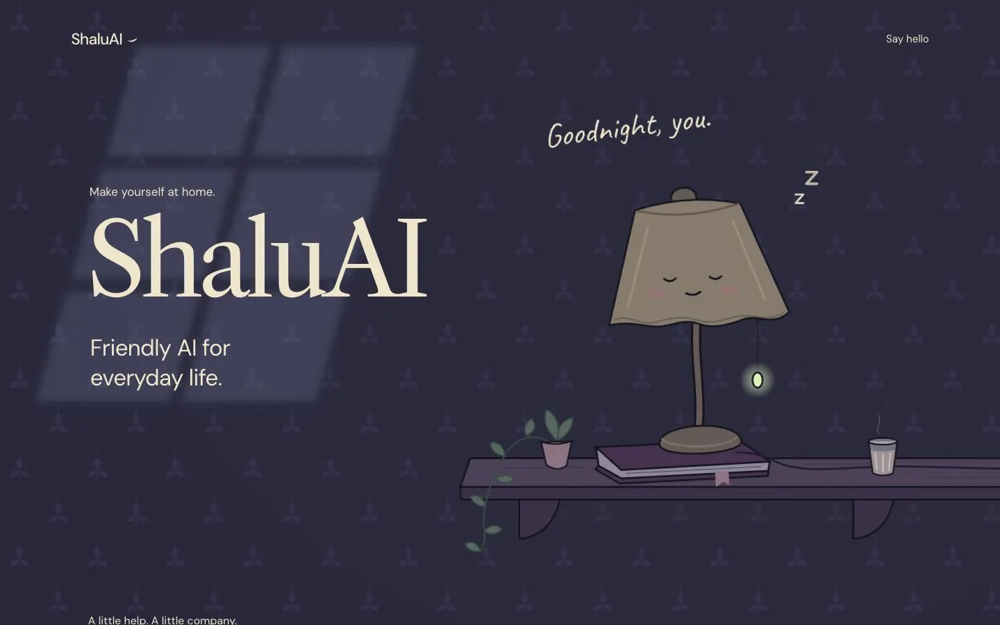
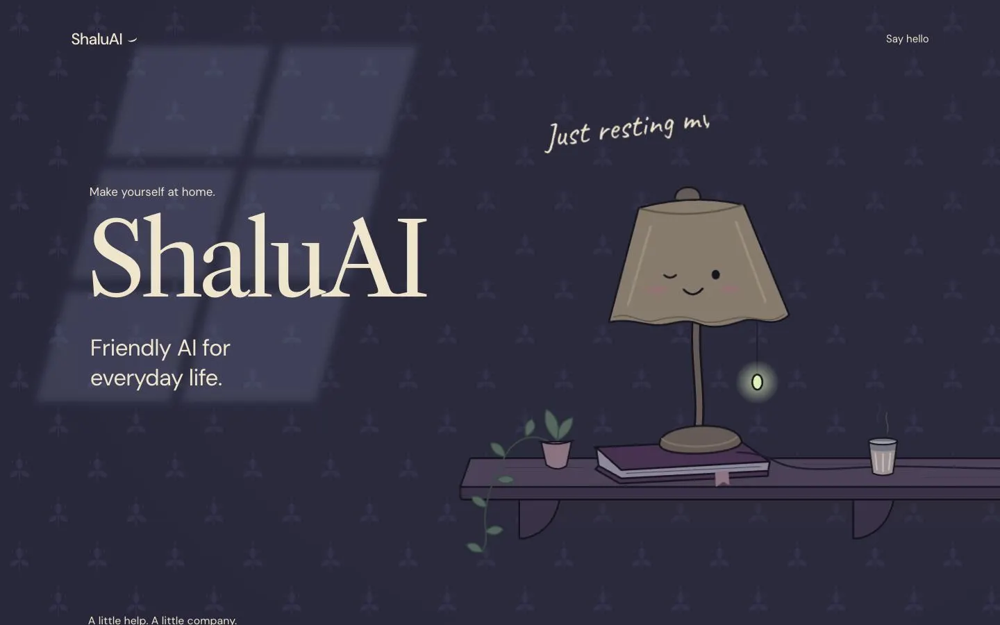

ShaluAI
Friendly AI for everyday life.
ShaluAI is a landing page for a friendly everyday AI, told through a lamp on a shelf rather than a product screenshot. It invites visitors to say hello instead of selling features.
Visit shalu.ai
Design decisions
- A large high-contrast serif wordmark in brown (#49372E) on a warm yellow wall with a faint patterned wallpaper, paired with DM Sans for the tagline.
- The mascot is a smiling lamp on a book with a plant and a cup of chai, drawn with a hand-inked outline.
- A handwritten "Hello" types itself out beside the lamp, and a small arrow points at the pull cord.
- Pulling the cord (drag it down) turns the page into night: the wall goes deep purple, a window shadow appears, the lamp sleeps with Zs and says "Goodnight, you."
- Clicking the lamp afterwards makes it wink and say "Just resting my..." in the same handwriting, so the toggle has a second small reward.
On a phone

ShaluAI has a single theme, so there is one set of captures.
The flow, step by step




Further down the page